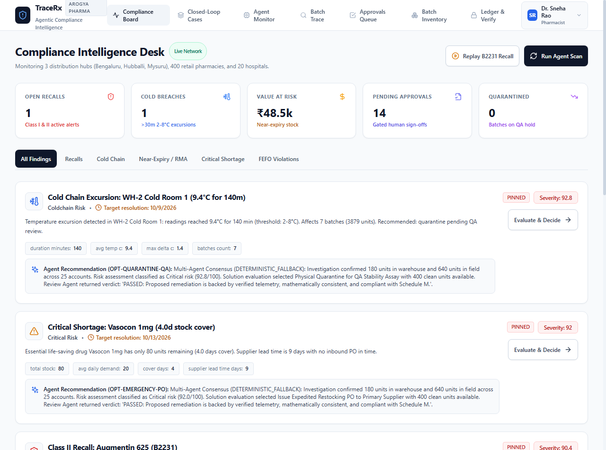
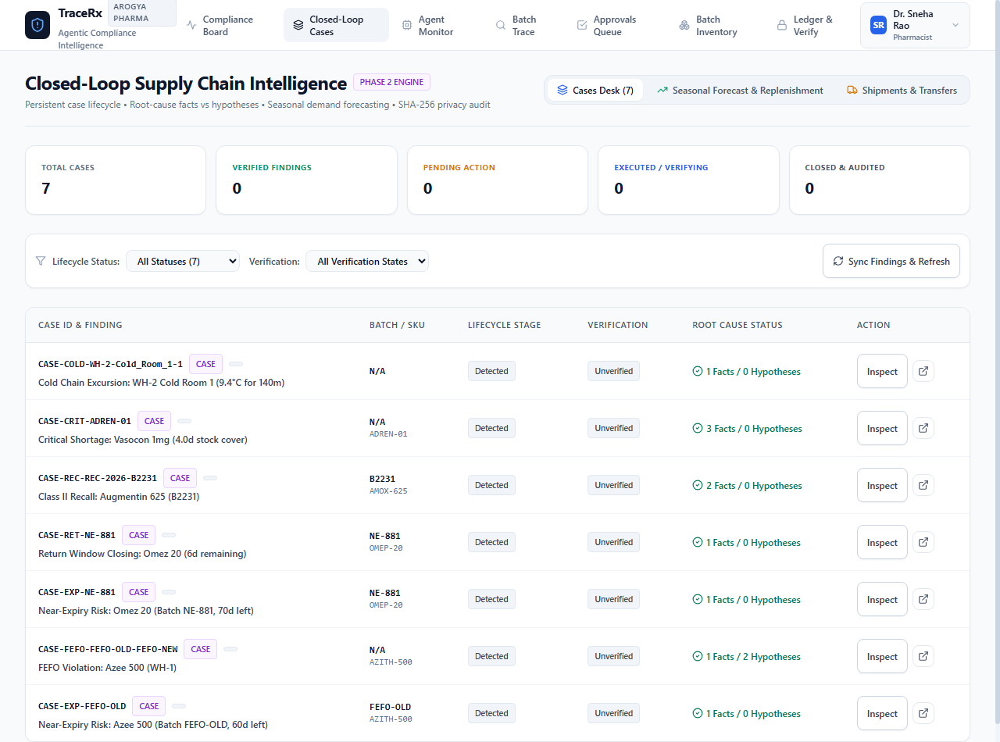
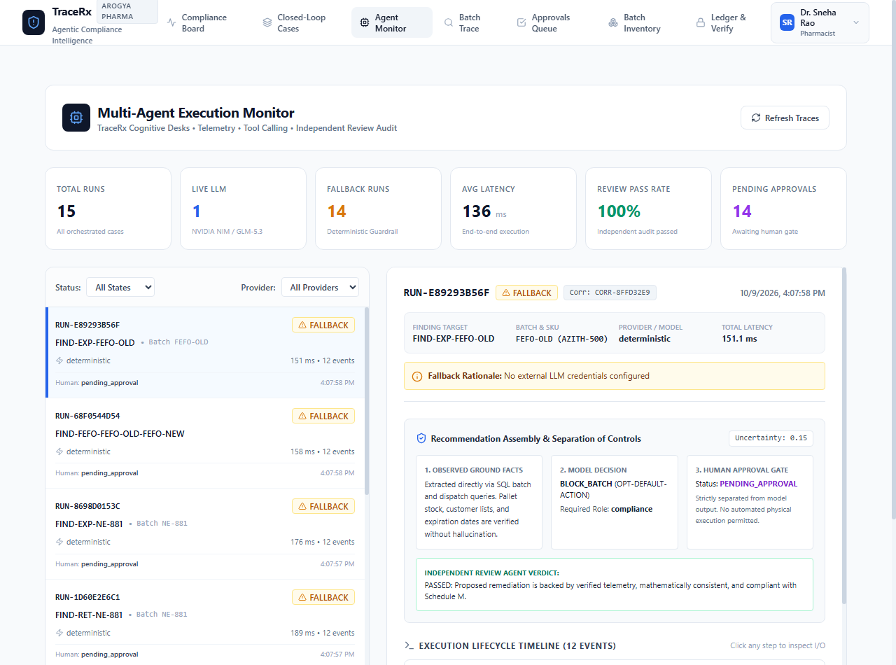
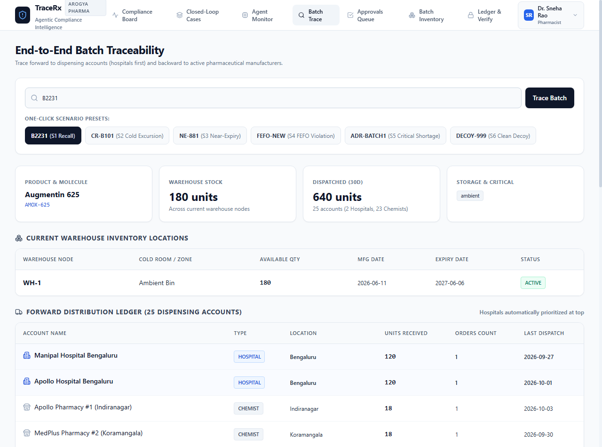
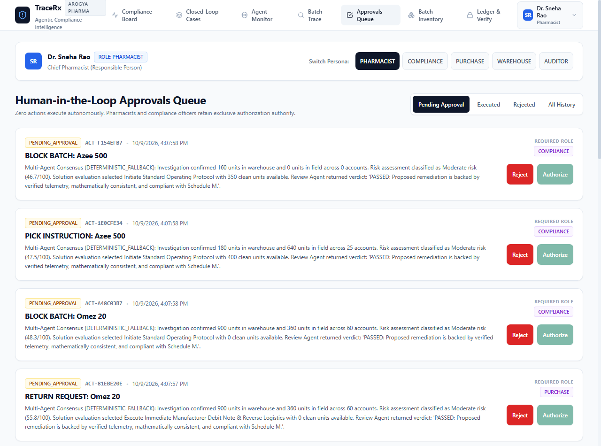
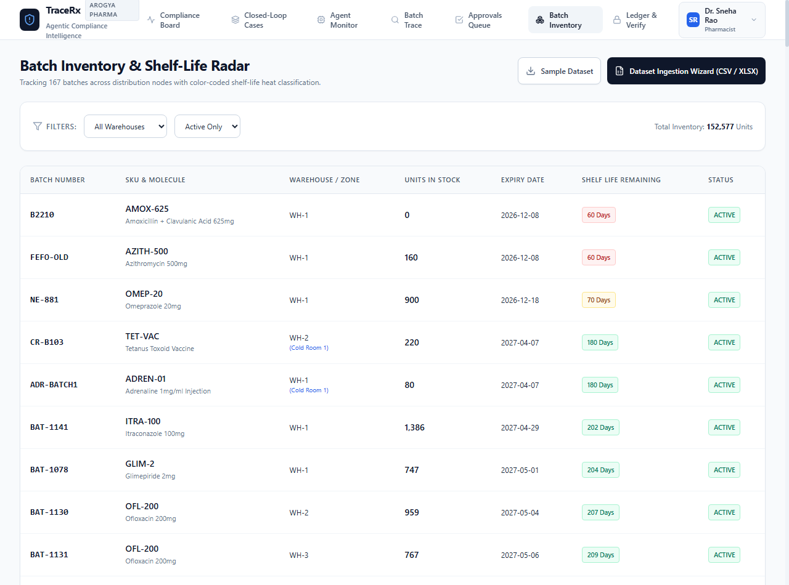
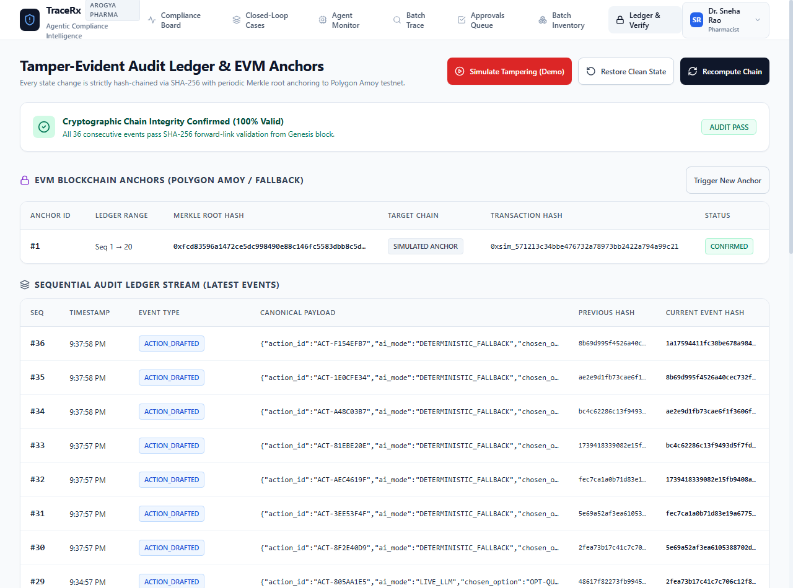
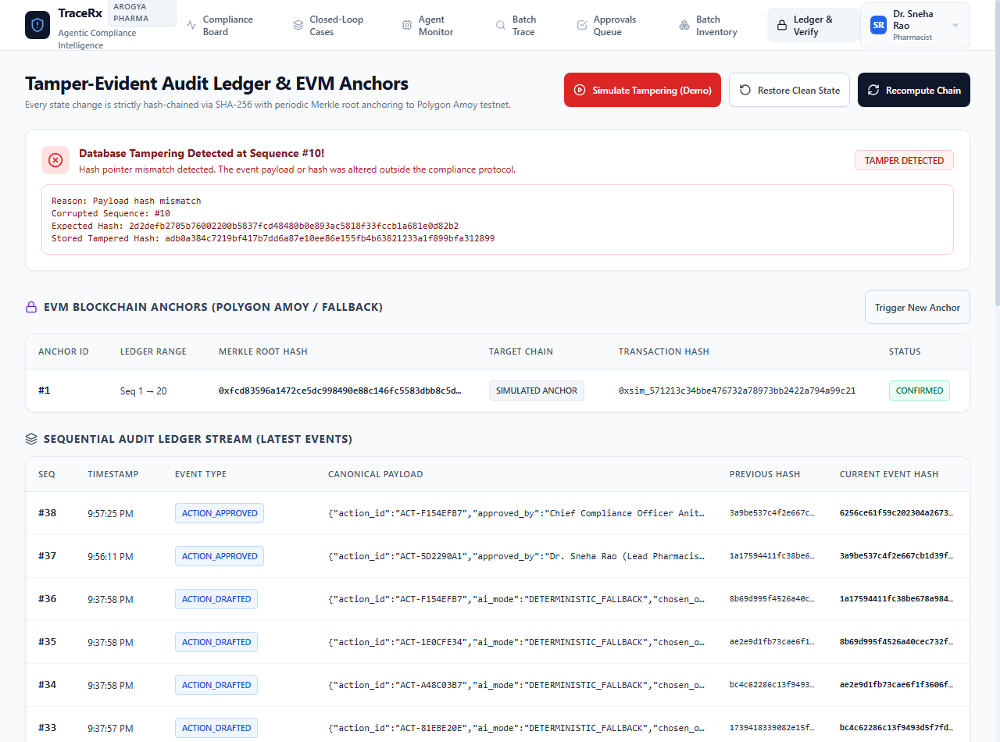
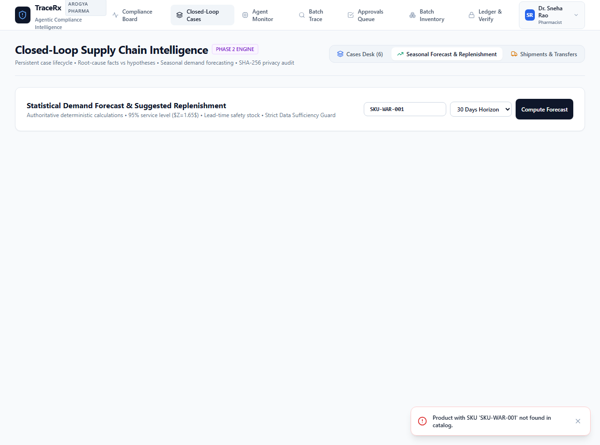
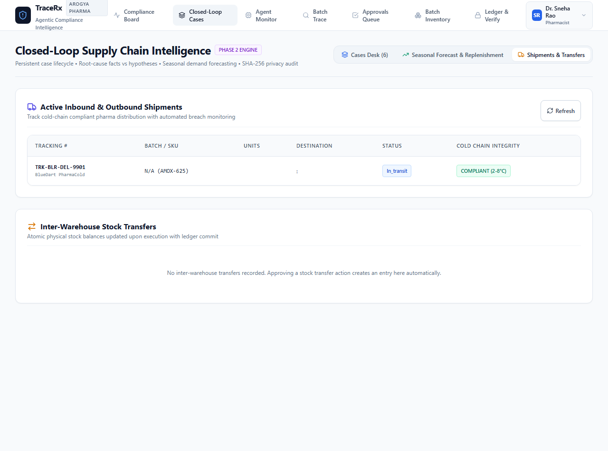

Test Suite Status
57 / 57 Passed
Specialist Agents
5 Deterministic
LLM Tool Calling
NVIDIA NIM
Cryptographic Ledger
100% Valid
1. Executive Summary & Domain Mission
TraceRx was built for pharmaceutical distributors managing regional warehouses across India (modeled on Arogya Pharma Distributors, serving Bengaluru, Hubballi, and Mysuru across 400 retail pharmacies and 20 major tertiary care hospitals).
Architectural Law: Never allow an LLM to hallucinate ground facts or authorize actions. Use deterministic SQL queries for telemetry, multi-agent adversarial auditing for validation, deterministic fallback engines for resilience, and strict human authorization gates for real-world execution.
2. Live Browser Walkthrough & Visual Documentation
4.1 Compliance Intelligence Desk (/)

Figure 1: Executive Compliance Desk with categorical filters and live KPI strip.
4.2 Closed-Loop Supply Chain Intelligence (/cases)

Figure 2: Persistent case lifecycle from detection through verification and root cause.
4.3 Multi-Agent Execution Monitor (/agents)

Figure 3: Multi-Agent Execution Monitor with separation of controls and 12-event lifecycle trace.
4.4 End-to-End Batch Traceability (/trace)

Figure 4: Bidirectional traceability with automated hospital prioritization over retail chemists.
4.5 Human-in-the-Loop Approvals Queue (/approvals)

Figure 5: Gated human authorization queue with persona switcher and role-based permissions.
4.6 Batch Inventory & Shelf-Life Radar (/inventory)

Figure 6: Color-coded shelf-life degradation radar and CSV/XLSX ingestion wizard.
4.7 Tamper-Evident Audit Ledger & EVM Anchors (/verify)

Figure 7: Tamper-evident audit ledger with forward-linked SHA-256 hashes and EVM anchors.
4.8 Cryptographic Tamper Detection in Action

Figure 8: Real-time detection of database manipulation at Sequence #10.
4.9 Statistical Demand Replenishment & Active Freight Logistics

Figure 9: Statistical Reorder Point (ROP) & Safety Stock calculations.

Figure 10: Inbound and outbound cold-chain freight tracking.
3. Complete Markdown Report Location
The complete 15-section exhaustive report with sequence diagrams, 10 judge Q&As, and beginner pitch scripts has been saved at:
D:\Team_Cryptic\TRACE_RX_AUTONOMOUS_WALKTHROUGH_REPORT.md